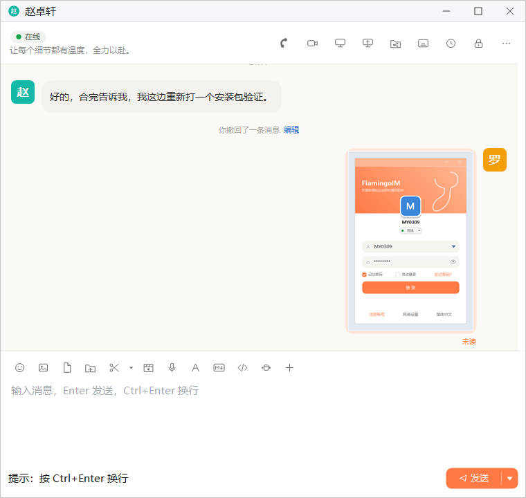
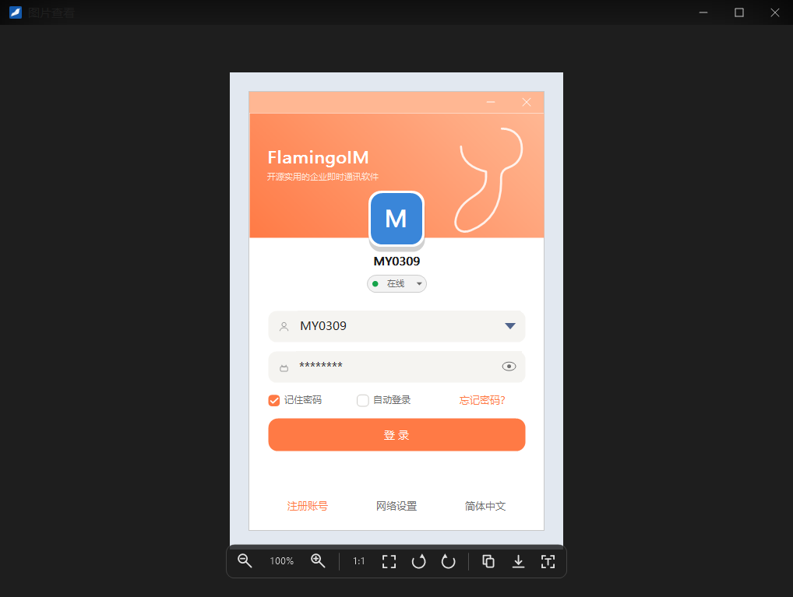
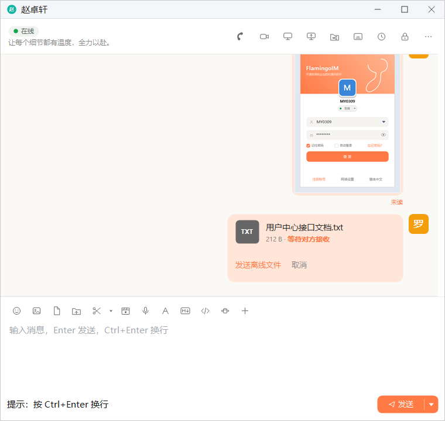
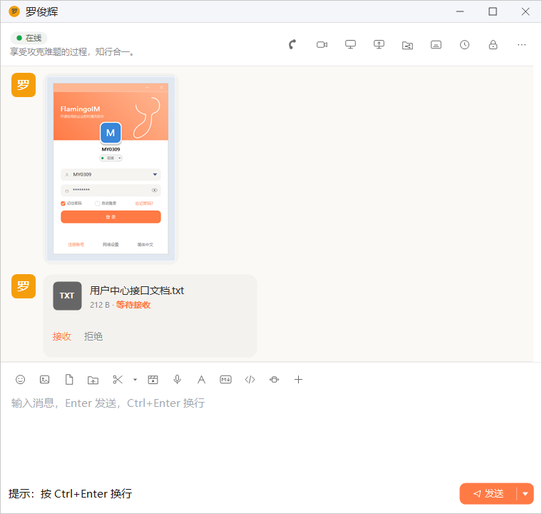
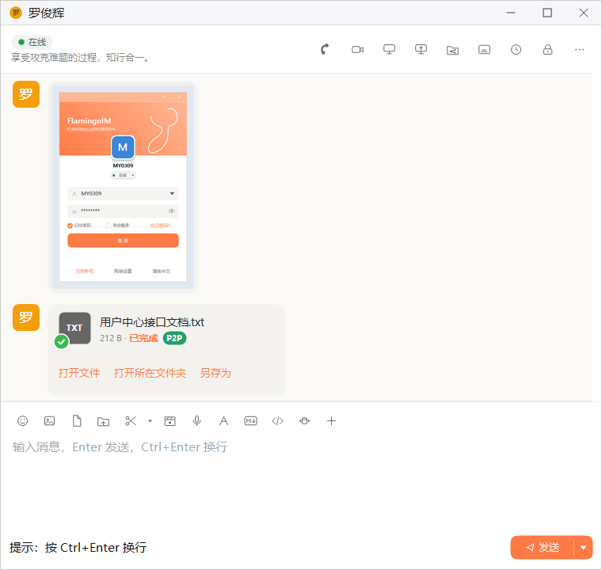
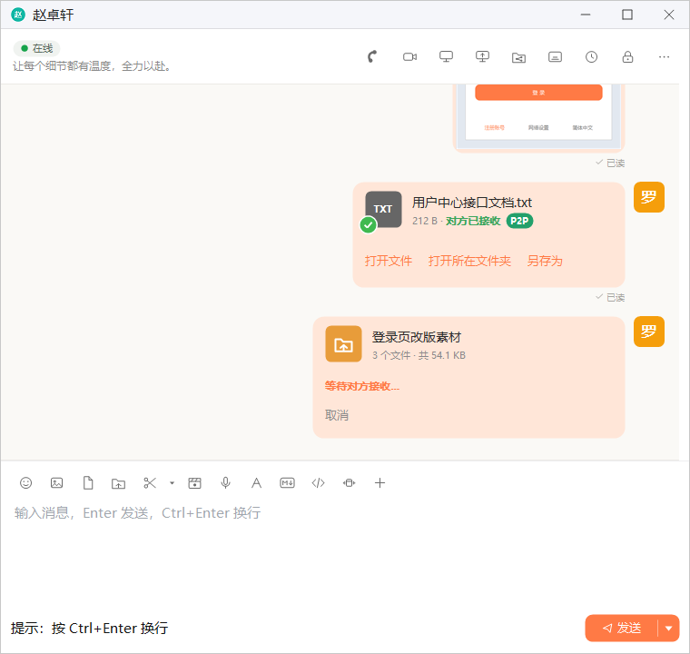
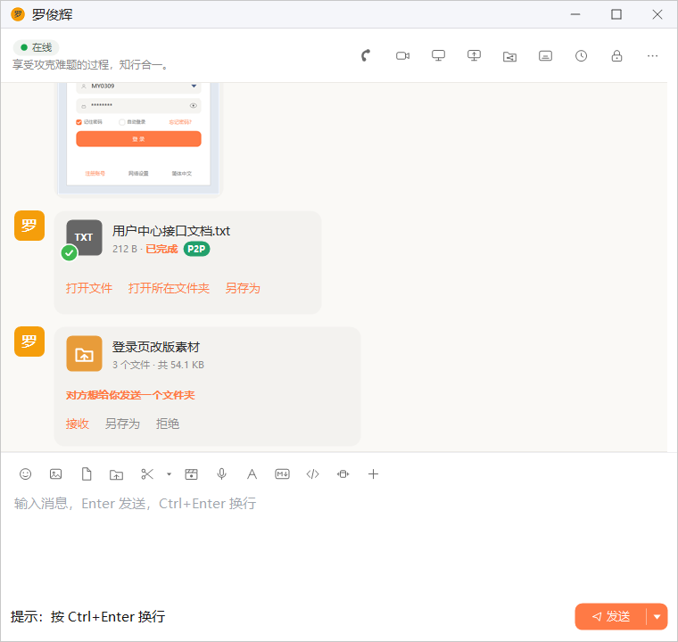
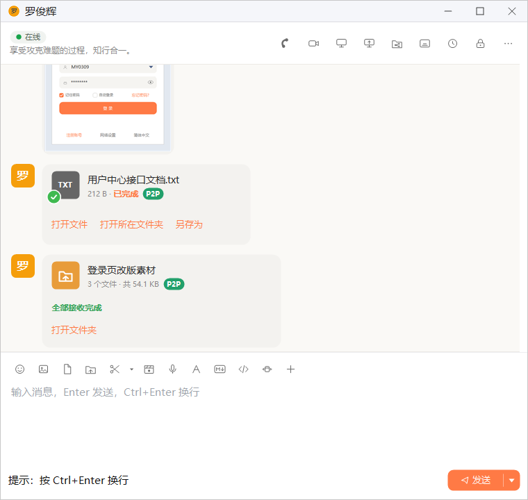

图片、文件与文件夹
本章介绍在单聊中发送和查看图片、发送和接收文件，以及把整个文件夹传给同事。对方在线时，文件和文件夹会优先在两台电脑之间直接传输，速度更快。
- 适用：全体员工
- 需要：已登录且网络在线
- 发送文件夹：对方必须在线
发送与查看图片
点输入工具栏的 图片 按钮，在弹出的对话框里选一张图片，图片会直接发给对方，不需要再点发送。也可以用截图功能截一张图发出去，见「截图与图片文字识别」。

双击聊天中的图片，会打开「图片查看」窗口查看大图：

按 Esc 可以关闭这个窗口。底部工具栏从左到右依次是：
| 按钮 | 作用 |
|---|---|
| 缩小 / 放大 | 逐级缩放图片，两个按钮中间显示当前的显示比例（如 100%） |
| 原始尺寸（1:1） | 按图片的实际像素大小显示 |
| 适应窗口 | 缩放到整张图片刚好放进窗口 |
| 向左旋转 / 向右旋转 | 每次旋转 90 度 |
| 复制图片 | 把图片复制到剪贴板，可以粘贴到其他程序里 |
| 另存为 | 把图片保存到你选择的位置 |
| 图片文字识别 | 识别图片中的文字，见图片文字识别 |
右键聊天中的图片，还可以选 图片另存为、图片文字识别、再次发送 等操作，见「消息的更多操作」。
发送文件
点输入工具栏的 发送文件 按钮选一个文件，或者直接把文件拖进输入框。客户端会根据对方是否在线选择传输方式：
| 情况 | 传输方式 |
|---|---|
| 对方在线 | 在线直传：等对方点「接收」后，文件在两台电脑之间直接传输，不经过服务器保存 |
| 对方不在线，或无法直传 | 离线文件：先上传到服务器，对方上线后随时可以接收 |
在线直传的过程
- 你发出文件后，聊天里出现一张文件卡片，显示文件名、大小和「等待对方接收」。卡片下方有两个链接：发送离线文件 立即改为上传到服务器，取消 撤销这次发送。
- 对方的聊天窗口里出现同样的文件卡片，显示「等待接收」，对方可以点 接收 或 拒绝。
- 对方接收后两边显示传输进度。传完后，你这边显示「对方已接收」，对方那边显示「已完成」，文件图标上出现绿色对勾。
- 卡片下方出现 打开文件、打开所在文件夹 和 另存为，接收方可以直接打开文件，或另存到其他位置。



「P2P」标记是什么意思状态文字旁的绿色「P2P」表示这次传输的数据在两台电脑之间直接传送（局域网直连或公网直连），没有经过服务器。网络条件不允许直连时，数据会经服务器转发，这时不显示「P2P」。
什么时候会改为离线文件
- 对方不在线、对方使用的客户端不支持直传，或企业关闭了点对点直连时，文件直接上传到服务器，作为离线文件发出。
- 两台电脑之间无法建立连接时，自动改为上传到服务器。
- 对方一直没有点「接收」，超过一定时间（默认 5 分钟）后自动改为离线文件。等待期间你也可以点 发送离线文件 提前转换。
在线直传的文件服务器上不保存直传成功后，文件只存在于你们两人的电脑上。在其他设备上看到这条记录时无法下载，删除本机的文件后也无法再从服务器取回，聊天记录里会显示「在线直传，服务器未保存」。需要长期留存的文件，可以在等待接收时点 发送离线文件。
发送文件夹
点输入工具栏的 发送文件夹 按钮选一个文件夹，或者把文件夹拖进输入框，就能把整个文件夹（包括其中的子文件夹）发给对方。发送文件夹需要对方在线，对方不在线时会提示「对方当前不在线，暂时无法发送文件夹。等对方上线后再发送吧。」
- 发出后，你这边出现文件夹卡片，显示文件夹名、文件个数与总大小，以及「等待对方接收…」。在对方回应之前可以点 取消 撤回。
- 对方看到「对方想给你发送一个文件夹」，可以选择：接收 直接保存到默认的文件夹接收目录；另存为 先选择保存位置再接收；拒绝 不接收。
- 传输过程中，卡片显示正在传的文件以及「第 i / 共 n 个」。
- 全部传完后，接收方显示「全部接收完成」，发送方显示「全部发送完成」，双方都可以点 打开文件夹。



文件夹同样优先在两台电脑之间直接传输，直连成功时卡片上显示「P2P」标记。
传输中断怎么办传到一半失败时（例如网络断开），发送方的卡片上会出现 ↻ 重试，10 分钟内点它可以从中断处继续传；超过 10 分钟就只能 ↻ 重新发送，重新征得对方同意。对方一直不回应时，邀请会在一段时间后（默认 30 分钟）自动作废，卡片显示「邀请已超时」。服务器对文件夹里的文件个数和总大小设有上限，超出时卡片会说明原因。
把文件拖进输入框
在资源管理器里选中文件或文件夹，直接拖到聊天窗口的输入框上松开，就会按上面的方式发出，与点工具栏按钮的效果相同。工具栏 发送文件、发送文件夹 按钮的提示文字里也有这个说明。请拖到输入框上，拖到消息区不会发送。